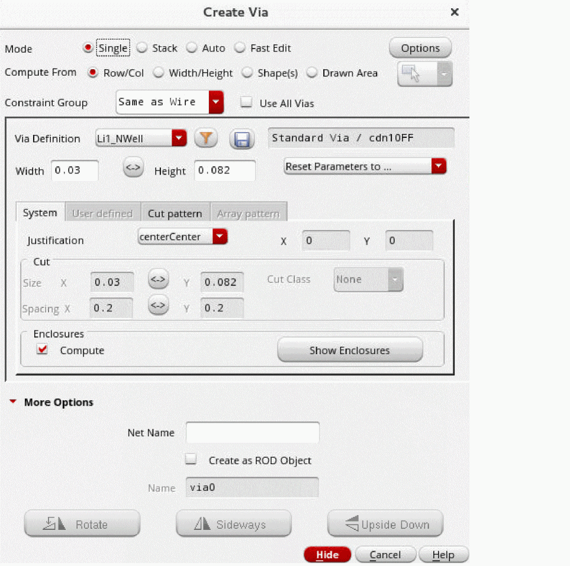
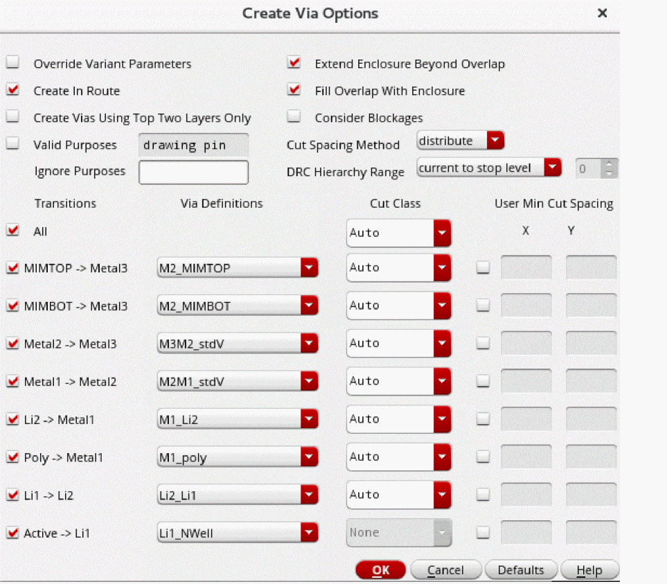

Setting Up Via Creation Options
Before creating a single, stack, or auto via, you can set up the viaDefs to be available for via creation.
To set up via creation options:
-
In the layout window, choose Create – Via or click the Create Via icon
 on the Create toolbar.
on the Create toolbar.
The Create Via form opens.
 -
Click the Options button. This button is available in all the via modes.
The Create Via Options form opens.
 - Select the Override Variant Parameters check box to allow the update of via variant parameter values.
-
Select the Extend Enclosure Beyond Overlap check box if you want the via enclosures to extend beyond the overlap region of the intersecting shapes.
In the Single and Stack mode, use this check box along with selecting the Compute From – Shape(s) check box on the Create Via form. - Select the Fill Overlap With Enclosures if you want the via enclosure to extend and cover the complete overlap region between two intersecting shapes in Auto mode.
- Select other via options such as Create Vias Using Top Two Layers Only and Cut Spacing Method as required.
- From the Cut Class list, select the cut class you want to be available by default for the respective viaDef/via variant in Single mode. The selected cut class is also used by the Stack and Auto automatic via creation engines.
- From the Via Definitions list, select a viaDef/via variant for each layer pair. The selected viaDef/via variant is also used by the Stack and Auto automatic via creation engines.
Related Topics
Creating a Via with Arrayed Via Cuts
Creating a Via Automatically in Single and Stack Modes
Return to top